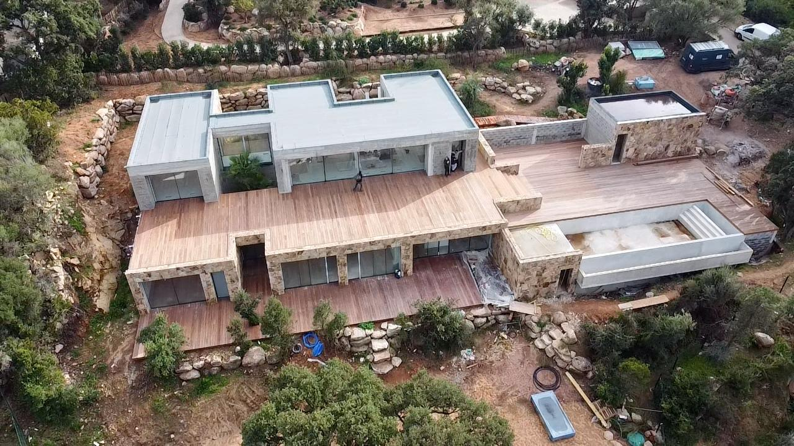
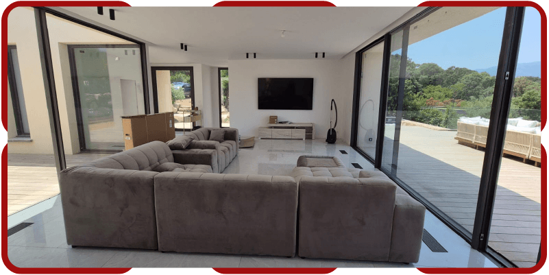
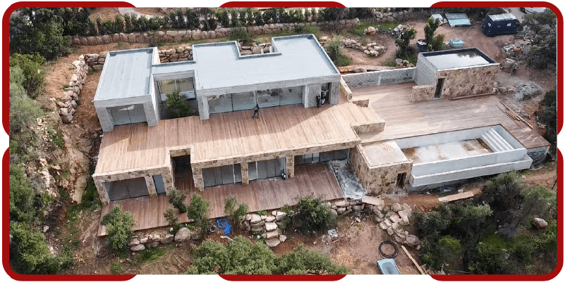
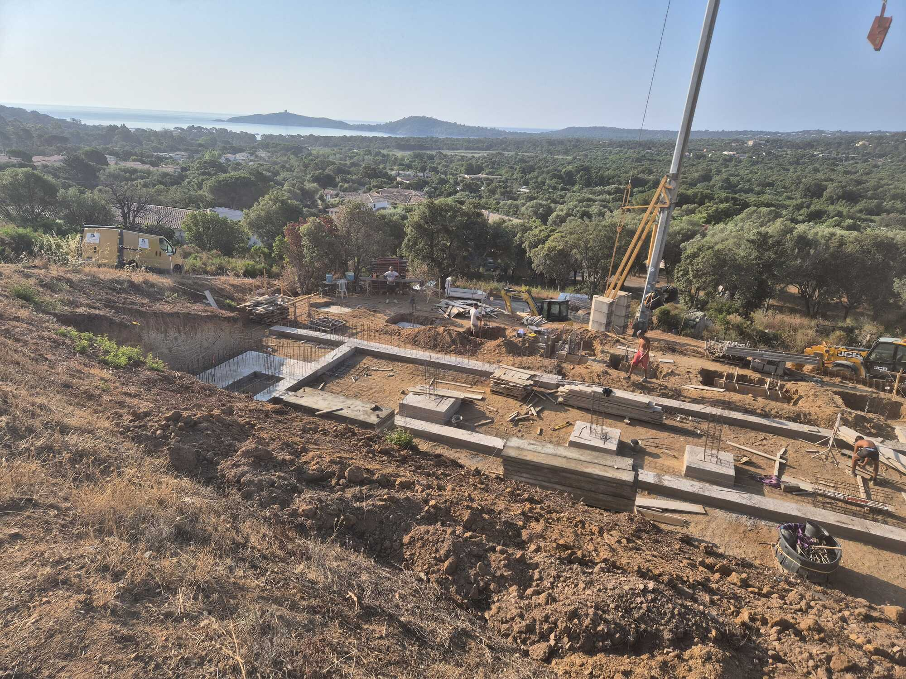
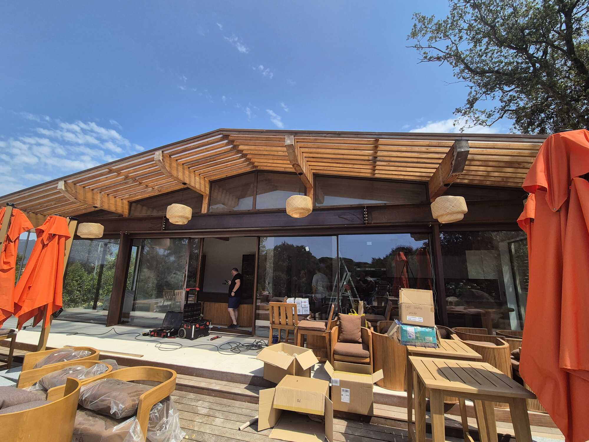

Construction de maisons neuves
Des maisons sur mesure, pensées pour le climat et le paysage corses, de l'esquisse jusqu'à la réception du chantier.
De la conception à la livraison, Nuno de Almeida pilote vos projets de construction, de rénovation et d'extension autour de Porto-Vecchio — avec un réseau d'artisans sélectionnés et la garantie décennale.
Faire construire ou rénover en Corse demande une parfaite connaissance du terrain, des contraintes locales et des bons artisans. En tant que maître d'œuvre, Nuno de Almeida conçoit votre projet, sélectionne les entreprises, organise et coordonne le chantier, puis veille au respect des délais, du budget et de la qualité d'exécution.
Vous gagnez en sérénité : un seul interlocuteur responsable de l'ensemble, et des travaux réalisés sous garantie décennale.

Des maisons sur mesure, pensées pour le climat et le paysage corses, de l'esquisse jusqu'à la réception du chantier.
Rénovation technique et esthétique des maisons existantes : gros œuvre, second œuvre et finitions, pour redonner valeur et confort.
Agrandissez votre habitat dans les règles de l'art : extensions bois, béton ou mixtes, parfaitement intégrées à l'existant.
Planification, gestion des intervenants et suivi quotidien : votre chantier avance dans les délais et le respect du cahier des charges.
Un accompagnement personnalisé à chaque décision, pour des choix éclairés, durables et adaptés à votre budget.
Tous les travaux sont réalisés sous garantie décennale : une sécurité essentielle pour protéger votre investissement.
Des projets ancrés dans leur territoire, entre mer et montagne, menés avec exigence et savoir-faire.





Basée à Lecci, la SARL De Almeida intervient dans un rayon de 50 km autour de Porto-Vecchio. Une proximité qui fait toute la différence : réactivité, connaissance du terrain et suivi régulier de votre chantier.
Construction, rénovation ou extension : décrivez-nous votre projet et recevez un devis gratuit, sans engagement.